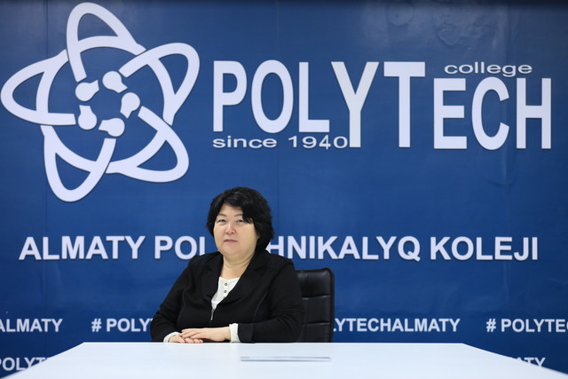
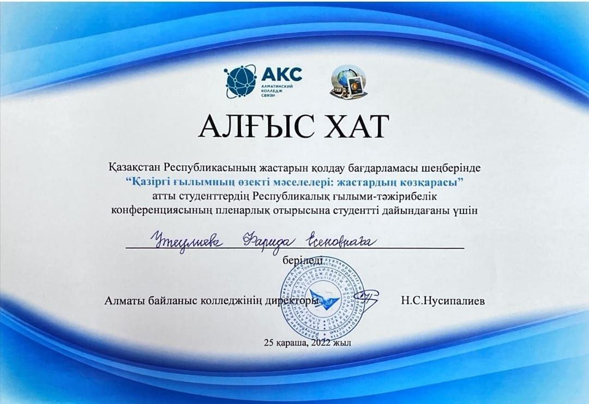
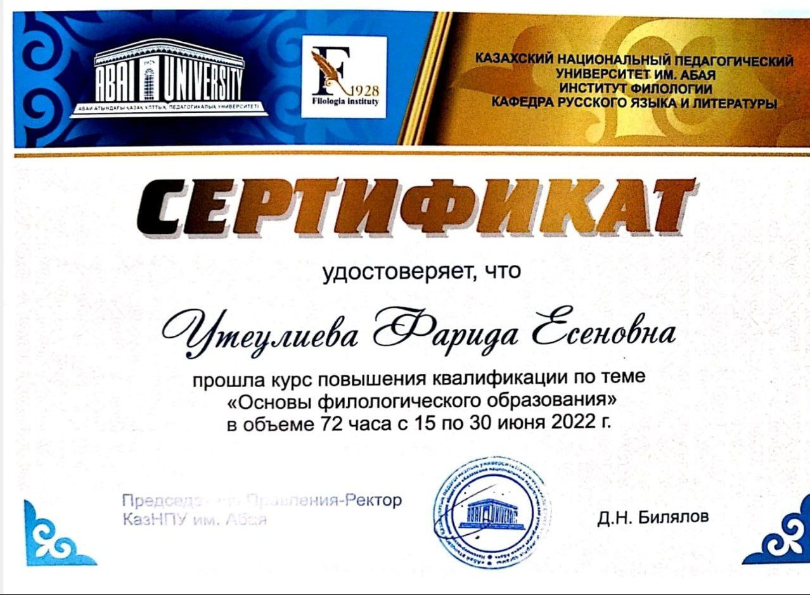

Резюме✍

Утеулиева Фарида Есеновна
Жалпы білім беру пәндерінің оқытушысы
Утеулиева Фарида Есеновна, 1970 жылы 02 акпан айы Жамбыл облысы Талас ауданының Бостандық аулында қызметкерлер отбасында дүниеге келді. 1986 жылы Қзылорда облысы Тереңөзек ауданы 18-партсъезд аулының Асқар Тоқмағамбетов атындағы орта мектепті бітіріп, Қорқыт-Ата атындағы Қзылорда педагогикалық интституттың филология факультетіне түстім.
1993 – 2001 жылдар аралығында орта мектептің орыс тілі және әдебиеті мұғалімі болып жұмыс жасады. 2001 жылдан бастап техникалық және кәсіптік білім беру жүйесінде оқытушы болып жұмыс жасайды.
Тәжірибелік-педагогикалық жұмыстың нәтижелері бойынша академиялық 2012 жылы РАМ қауымдастырылған профессор (доцент) атағы берілді.
Марапаттары

